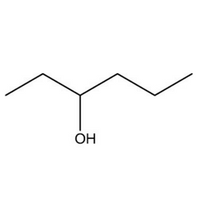
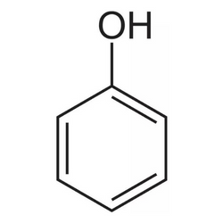
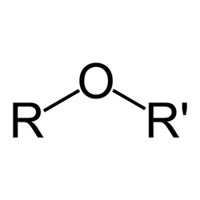
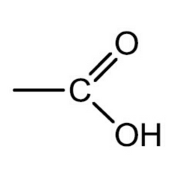
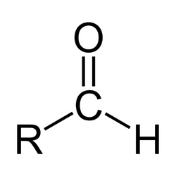
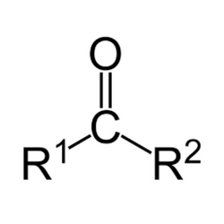
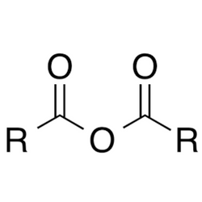

-
Álcool
Os álcoois (função álcool) são compostos que apresentam como grupo funcional a hidroxila (‒OH), ligados a carbonos saturados, em sua estrutura. Podem possuir insaturações, cadeias cíclicas e ramificações.
-
Fenol
O Fenol é uma função orgânica caracterizada pela presença do grupo funcional hidroxila (-OH) juntos aos anéis benzênicos (carbono de núcleo benzênico) ou aromáticos (C6H6).
-
Éter
Éter é uma função orgânica oxigenada, isto é, apresenta o elemento químico oxigênio, além de carbono e hidrogênio. Essa função possui como principal característica estrutural a presença de dois radicais orgânicos ligados a um átomo de oxigênio.
-
Ácido Carboxílico
Ácidos carboxílicos são compostos orgânicos que apresentam o grupo funcional carboxila, isto é, um carbono que realiza uma ligação dupla com oxigênio e uma ligação simples com um grupo OH.
-
Aldéido
Aldeído é uma dos compostos da química orgânica que possuem o grupo funcional carbonila na extremidade da cadeia, além de apresentar em um carbono primário a carbonila (C=O).
-
Cetona
Cetona é todo composto orgânico que possui o grupo carbonila (C = O) em um carbono secundário da cadeia, ou seja, esse grupo sempre vem entre dois carbonos
-
Anidrido
Anidridos de ácidos carboxílicos são compostos orgânicos formados a partir da reação química entre dois ácidos carboxílicos. Não pare agora... Tem mais depois da publicidade ;) Observação: Um anidrido de ácido carboxílico pode ser originado pela reação entre dois ácidos carboxílicos iguais ou diferentes.
-
Amina

A amina é uma classificação de compostos orgânicos nitrogenados derivados da amônia, ou amoníacos (NH3), resultantes da substituição parcial ou total dos hidrogênios que compõem os grupos de alquilas ou arilas, cadeias representadas pela letra “R”
-
Haleto

Os haletos são compostos químicos que possuem qualquer um dos representantes da família 7A (flúor, cloro, bromo, iodo e astato) com estado de oxidação -1.